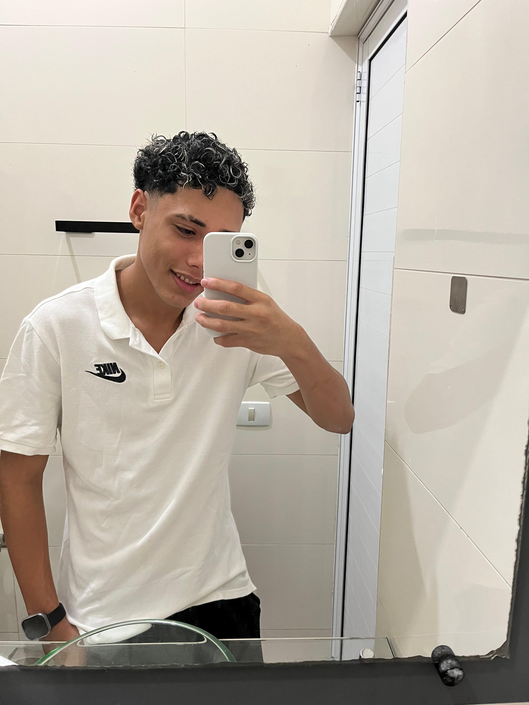

2015 - 2017
Escola Primorosa Jorge do Nascimento
Ensino Fundamental

Estudante de Desenvolvimento de Software, com o objetivo de me tornar um programador Full Stack. Apaixonado por tecnologia e inovação, estou sempre em busca de novos desafios e oportunidades para crescer profissionalmente. Atualmente, curso o ensino médio e desenvolvo projetos práticos para aprimorar minhas habilidades técnicas, com a pretensão de cursar Análise e Desenvolvimento de Sistemas.
2015 - 2017
Ensino Fundamental
2018 - 2024
Ensino Fundamental / Ensino Médio
2024 - 2026
Ensino Médio
2026 -
Curso Livre

2026
Projeto construído para treinar responsividade e formulários em uma das telas mais populares de sistemas web.
Projeto desenvolvido para praticar a criação de uma tela de login responsiva, com foco em organização de layout, usabilidade e adaptação para diferentes tamanhos de tela usando Flexbox.

2026
Projeto construído para treinar responsividade, múltiplas media queries e a divulgação das principais redes sociais em uma interface interativa.
Projeto criado para simular a navegação em redes sociais dentro de um smartphone estilizado, trabalhando responsividade, iframes e adaptação visual em diferentes telas.

2026
Projeto construído para treinar conteúdos e imagens dinâmicas com a história do sistema Android.
Projeto que apresenta a história do sistema Android, criado para praticar recursos de CSS3, como backgrounds, inserção de links, imagens responsivas e organização de conteúdo.

2026
Projeto construído para treinar o efeito parallax em imagens e a apresentação de conteúdo em diferentes tamanhos de tela.
Projeto desenvolvido para praticar o efeito parallax, tipografia e organização de seções com imagens de fundo, criando uma experiência visual mais imersiva e responsiva.

2026
Projeto construído para treinar a inserção de vídeos em páginas web, além da navegação entre páginas.
Projeto criado para praticar incorporação de vídeos, navegação entre páginas e organização de conteúdo multimídia em um site simples e responsivo.